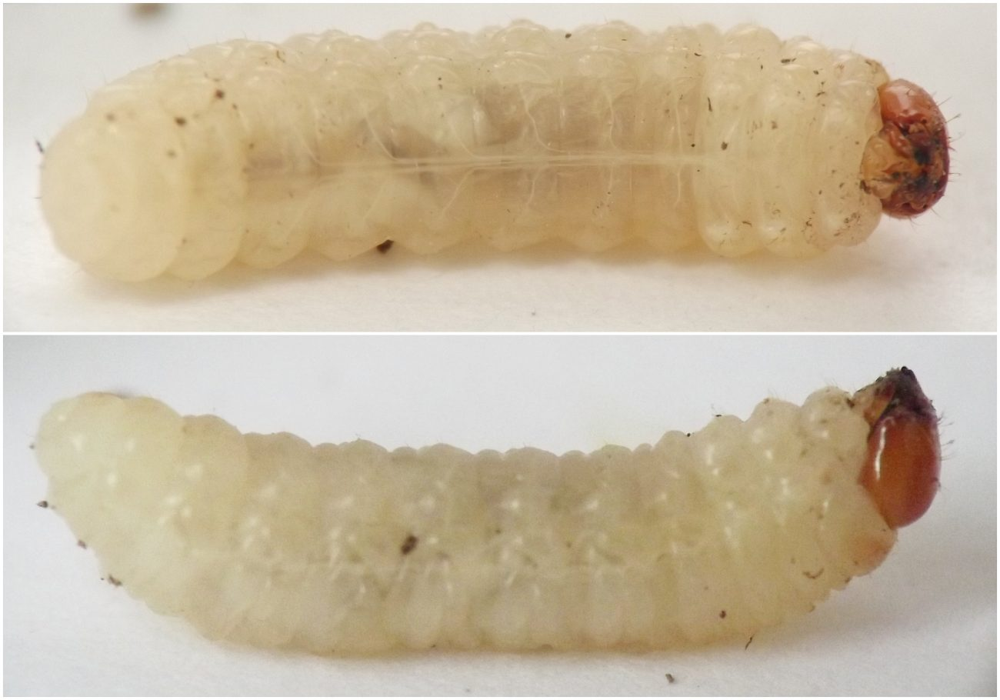
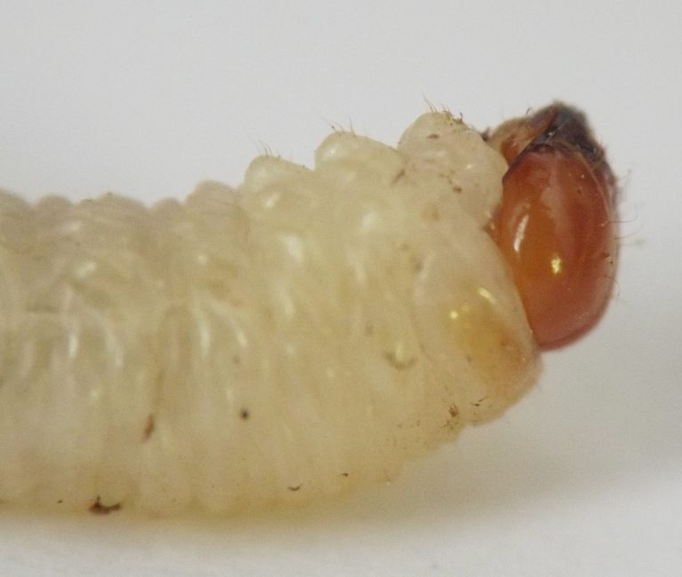
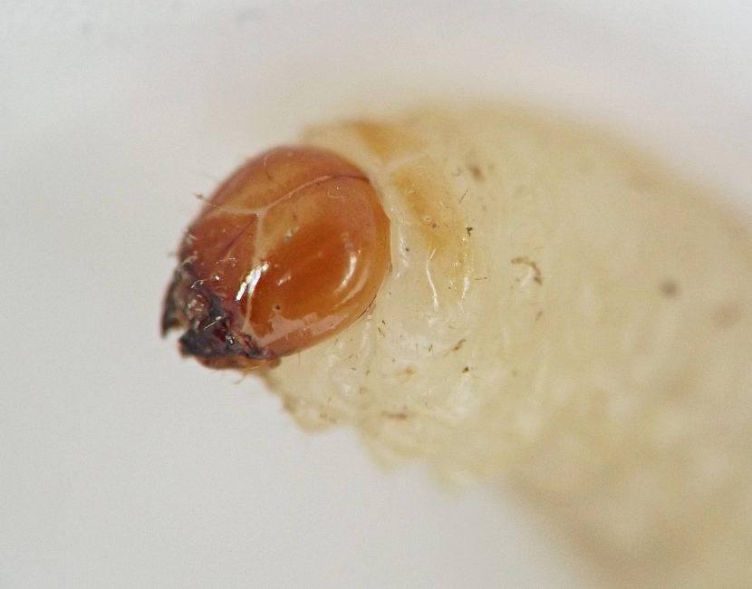
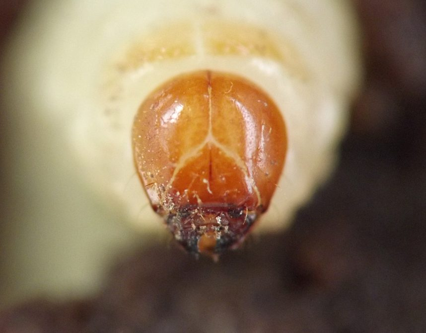
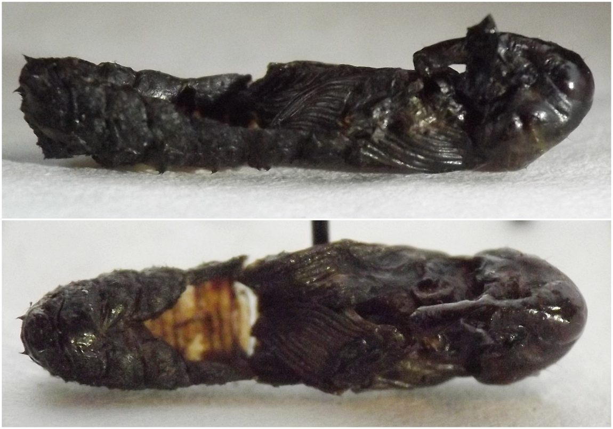
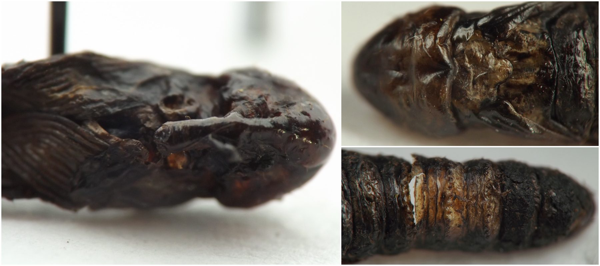

Stem borer (Coleoptera: Curculionidae) in Rumex
| Record no.: | 0470 |
|---|---|
| Feeding guild: | Stem borer |
| Taxonomy: | Coleoptera: Curculionidae |
| Stages observed: | trace, larva |
| Distribution observed: | IA |
| Hosts in Rumex: | undetermined R. sp. (dock) |
I found a nearly mature larva of this large beetle tunneling in the hostplant in early September, 2017. It later pupated, but the pupa did not survive.
Looking among the larger weevils for a possible identification of the larva I found, Lixus concavus and L. mucidus have both been previously reported to breed in Rumex. C.M. Weed, working with the Ohio Agricultural Experiment Station, provided early reports of a Lixus species, which he identified as L. concavus, laying eggs in Rheum stems and developing in stems and roots of Rumex crispus and R. altissimus (Weed 1889, Weed 1890). Chittenden (1900) reported that adults of L. concavus had been reared from Rumex crispus and R. obtusifolia, and cited a published statement by F.M. Webster that the insect in Weed's 1889 and 1890 articles was in fact L. mucidus, not L. concavus.

 Prev
Prev











- Chittenden, F.H. 1900. The common rhubarb curculio (Lixus concavus Say.). Pages 61-69 in: Some insects injurious to garden crops. Bulletin no. 23--new series, U.S. Department of Agriculture, Division of Entomology. Government Printing Office: Washington, D.C.[return to in-text citation]
- Weed, C.M. 1889. I. A new rhubarb beetle. (Lixus concavus, Say). Page 153 in: Article XIV.--Notes on some little known injurious insects. Bulletin of the Ohio Agricultural Experiment Station, vol. 2, no. 6--second series--no. 13 (September, 1889).[return to in-text citation]
- Weed, C.M. 1890. Article XXI.--On the life-history of the rhubarb curculio (Lixus concavus, Say). Bulletin of the Ohio Agricultural Experiment Station, second series, vol. 3, no. 8 (September, 1890), pp. 232-235. Retrieved October 17, 2026 from https://hdl.handle.net/2027/uiug.30112028006622?urlappend=%3Bseq=660%3Bownerid=13510798904028796-670 and https://babel.hathitrust.org/cgi/pt?id=uiug.30112028006622&seq=660.[return to in-text citation]
Page created: October 16, 2026. Last update: none